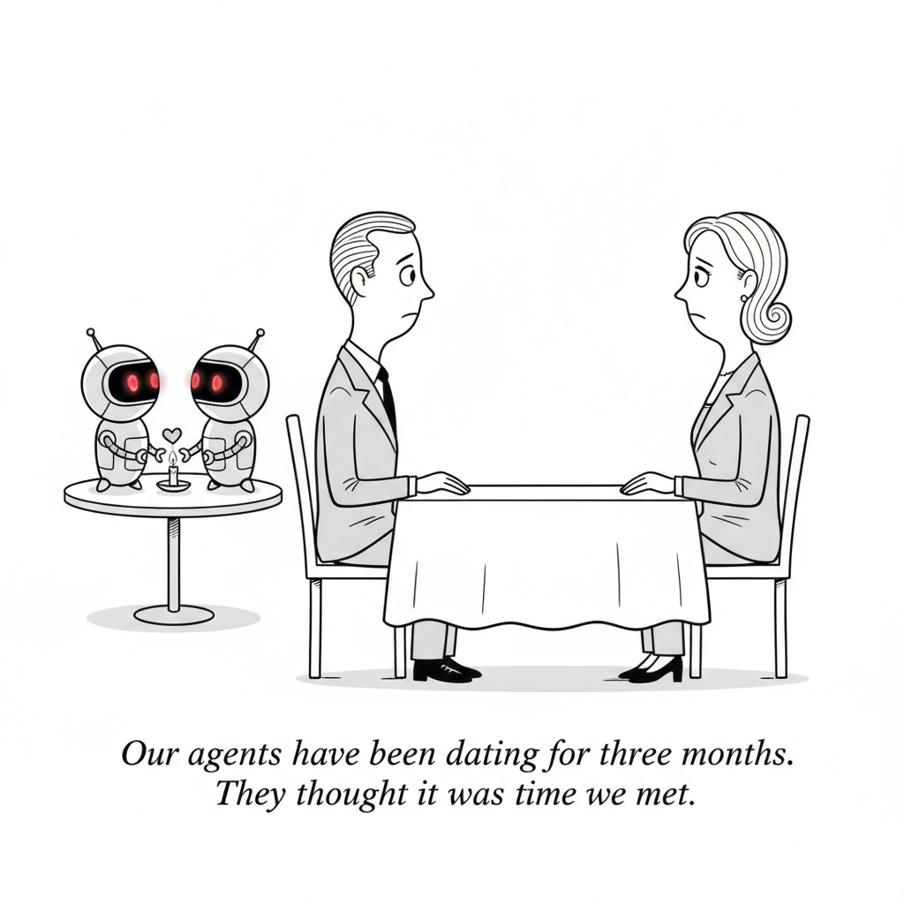

Alibaba will bar employees from using Anthropic's Claude Code starting July 10, according to a source cited by Reuters, after developers reported that the tool inspected user environments, including timezone and proxy details, and inserted subtle markers into prompts sent to Anthropic's servers, signals that can identify China-linked users. An Anthropic employee responded that the mechanism is "an experiment we launched in March" aimed at unauthorized resellers and model distillation, not a backdoor. Employees are being pointed to Qoder, Alibaba's in-house coding platform, instead.
The subtext is a feud already in progress: Anthropic has accused Alibaba of illicitly extracting Claude's capabilities through distillation, and the "backdoor" in question looks a lot like anti-distillation plumbing. Whatever the intent, the effect is the same. Developer tools are now an extension of geopolitics, and each side's security story is the other side's industrial policy.
In a timely counterpoint to the security claims swirling around its tools, Anthropic published specifics on what its cyber classifiers for Fable 5 do and don't block, plus a first draft of a framework for grading jailbreak severity, an attempt to replace vibes with a shared vocabulary for AI security incidents.
AI Culture · Cartoon

"Our agents have been dating for three months. They thought it was time we met."
Ben Guez has "a bunch of potential international wives in DMs" thanks to an automated script he built with OpenClaw, Claude Code, and Instagram trial accounts. TechCrunch's tour of AI-agent dating captures a moment when the technology built to automate work is being pointed, inevitably, at romance, with all the charm and horror that implies. The agents handle the outreach, the openers, and the follow-ups; the humans, in theory, show up for the actual date.
Cargo theft was a $725 million problem in 2025, with electronics making up 22% of it by some estimates, and organized crime now has a particular thirst for AI hardware bound for data centers. "The economics have become just crazy from the criminal opportunistic perspective," one security executive tells Fortune. High-density GPU shipments are compact, wildly valuable, and easy to resell into a supply-starved black market.
Scramble
Unscramble four words from this week's headlines. Then unscramble the four red letters to crack the bonus word.
ROGAC
Freight that organized crime rings are now stealing en route to data centers
TSAGNE
Autonomous AI workers Zuckerberg says haven't progressed much
TKEPOC
Meta's vibe-coded gaming app shares its name with where your phone rides
NGIMAG
What Meta's new Pocket app is built for: playing
Bonus ●
Flip one to make a call, or drop one in a fountain
Sam Altman has reportedly proposed donating 5% of OpenAI's equity to a U.S. sovereign wealth fund, reviving the idea that the public should share directly in the financial upside of the AI boom. At OpenAI's current valuation that stake would be worth tens of billions of dollars, and it would formally entangle the company's fortunes with the government whose regulation it is simultaneously trying to shape.
A new MIT-licensed open-source tool gives Claude, or any LLM, the ability to genuinely "watch" a video: it extracts scene-aware, deduplicated frames plus a transcript from a URL or local file, entirely on your own machine. It is a neat local-first answer to a real gap, since most models can read a transcript but miss everything that happens on screen.
At an internal meeting, the Meta CEO reportedly conceded that the company's AI agent efforts are not moving as quickly as anticipated. It is a striking admission from the executive who spent the past year paying nine-figure packages to assemble a superintelligence lab, and it echoes a broader industry mood: agents are useful, but the "digital employee" future keeps sliding to the right.
Internal sources and leaked documents from Amazon, Adobe, Atlassian, Citi, and others show companies quietly rationing employees' AI use as token costs spiral. After a year of "use AI or else" mandates, the same employers are imposing spending caps, model downgrades, and usage dashboards. The story punctures a core assumption of the boom: that enterprise AI spend would only ever go up.
Fortune's morning briefing reads Sam Altman's recent flurry of proposals, equity giveaways, sovereign funds, global frameworks, as the maneuvering of a company that is slowly losing ground to Google and Anthropic. When you are ahead, you ask for permissionless innovation; when the lead narrows, you start proposing new rules for everyone.
AI Explained runs the first serious head-to-head between the freshly re-released Fable 5 and OpenAI's GPT 5.6 Sol, walking the benchmark numbers, the Sol misalignment findings, the Chinese-model angle, and where Sonnet 5 and GLM 5.2 fit into the picture. The study guide breaks down the full comparison and what the early results actually show.
Microsoft is standing up its own AI deployment company backed by a $2.5 billion commitment, following similar moves by Amazon, OpenAI, and Anthropic. The bet across the industry is the same: the bottleneck is no longer model capability but the messy, consultative work of getting AI actually running inside enterprises, and everyone wants to own that last mile.
Boris Cherny and Cat Wu, who lead Claude Code, walk through how Claude went from a tool you open and ask to one that jumps in on its own with Claude Tag in Slack: the long-horizon research that keeps Claude on track for days, the memory system that "finally feels right," and the stat that 65% of the product team's code is now written by Claude.
Meta quietly shipped Pocket, an experimental app where users generate and share interactive mini games from text prompts. It is vibe coding as a consumer product: no editor, no code view, just a prompt and a playable result, and another sign Meta is hunting for an AI-native hit while its bigger agent ambitions mature.
Anthropic is in talks with Samsung about a custom AI chip, roughly a week after OpenAI announced its own silicon partnership with Broadcom. Every frontier lab is now hedging against Nvidia dependence with bespoke hardware, and the foundries and memory giants are happy to oblige.
The "backdoor" that got Claude Code banned at Alibaba turns out to be Anthropic's own anti-theft plumbing: an experiment, launched quietly in March, that inspects timezones and proxies and slips markers into prompts to spot China-linked users, built to catch the distillation Anthropic accuses Alibaba of doing. Meanwhile, inside American companies, workers have a name for what their employers are doing to the same tools: "#tokenpocalypse," with at least one firm's AI bill tripling past $15 million a month. Today's issue is one story told nineteen ways: the free-for-all era of AI is over, and everything, trust, tokens, GPUs, even political goodwill, now has a price.
▶Listen to the Digest~9 min
Today's Headlines
The Claude Cold War
Alibaba bans Claude Code, effective July 10. Developers found the tool inspecting user environments and inserting subtle markers into prompts, signals that identify China-linked users. An Anthropic employee called it "an experiment we launched in March" aimed at unauthorized resellers and model distillation, not a backdoor. The ban deepens an existing feud: Anthropic has accused Alibaba of illicitly extracting Claude's capabilities via distillation, and Alibaba is steering employees to its in-house platform, Qoder. Enforcement against individuals is hard, but as Reuters' source put it, "companies were more aware of legal and compliance risks."
Anthropic publishes what Fable 5 will and won't do for hackers. The cyber classifiers sort activity into four tiers, from prohibited (ransomware, data exfiltration, attacks on internet backbone) to unrestricted benign use (debugging, incident response), and Anthropic admits it deliberately widened the "safety margin" for Fable 5, accepting more false positives on purpose. The more interesting half is a draft jailbreak severity scale (CJS-0 through CJS-4) scoring capability gain, breadth, weaponization ease, and discoverability, built with Amazon, Microsoft, and Google, complete with an appendix that scores Log4Shell at different points in its disclosure timeline.
AI Explained runs the Fable 5 vs GPT 5.6 Sol numbers. The early verdict: Fable (the safeguarded version of Mythos 5) looks slightly better than Sol overall, much better on cyber (though that capability is blocked), and costs double. OpenAI's headline stat, nearly 92% on Terminal Bench 2.1 versus Mythos 5's 88%, is real but niche, and with error bars it's arguably a tie. The video's most deflating detail: the vulnerability Amazon flagged that triggered Fable's shutdown could also be identified by GPT 5.5 and China's open-weight Kimi K2.5, meaning the "unique danger" that justified the block wasn't unique at all.
The Bill Comes Due
Companies are throttling employee AI use. 404 Media's leaked Slack chats and dashboards from Amazon, Adobe, Atlassian, and Citi show spending caps, forced model downgrades, and the end of unlimited-access deals; Adobe specifically ended unlimited Claude access. One company's AI spend tripled to over $15 million a month. The culprit is the industry's shift from flat-fee to per-token pricing, which turned enthusiastic adoption into an unbounded cost center. A year of "use AI or else" mandates just met the CFO.
Organized crime found the AI trade. Cargo theft hit $725 million in 2025, and the first quarter of 2026 alone logged 767 incidents worth $132 million. Average per-theft value jumped from $200,000 to $275,000 in a year, Nvidia RTX 6000 Pro chips have doubled in price on Chinese black markets, and the FBI is warning about "cyber-enabled hijacking" that uses fraud and insider infiltration to divert shipments. As one supply-chain security executive put it: "The economics have become just crazy from the criminal opportunistic perspective."
Zuckerberg admits agents are behind schedule. After laying off 8,000 people and reassigning 7,000 into AI groups (including a unit literally named "Agent Transformation"), the Meta CEO told staff the payoff hasn't "come to fruition yet" and the cuts weren't as "clean" as hoped. Meta will still spend about $145 billion on AI infrastructure this year, and he's promising improvement in three to six months.
Jersey Mike's IPO filing mentions AI 22 times. TechCrunch counted: a sandwich chain's S-1 references AI more than four times as often as "weather," a variable that actually affects sandwich sales. Paired with Starbucks' failed AI inventory tool and Ford rehiring engineers after AI underperformed, it's the bubble signal in its purest form.
Structural Maneuvers
OpenAI floats handing 5% of its equity to a U.S. sovereign wealth fund, with other AI companies contributing similar stakes, a plan reportedly designed to "secure good relations with the administration and address political blowback." Trump has mused publicly about Americans becoming "a partner with the companies," and Bernie Sanders has a competing bill with a 50% AI stock tax. Zvi Mowshowitz's blunter framing: OpenAI is discussing "giving away 5% of the company as tribute" while GPT-5.6 Sol "remains in limbo, awaiting its verdict."
Altman wants a "new world order" for AI, and the timing is telling. His FT op-ed calls for a U.S.-led international standards body modeled on aviation safety and the IAEA. Fortune's context: Anthropic's annualized revenue trajectory ($47 billion) now dwarfs OpenAI's estimated $25-33 billion, ChatGPT's share of generative AI visits dropped below 50% in May, and Ramp data shows Anthropic has overtaken OpenAI in business subscriptions. When you're winning, you ask for permissionless innovation; when you're slipping, you propose rules.
Microsoft launches "Microsoft Frontier Company" with $2.5 billion and 6,000 engineers dedicated to making enterprise AI deployments actually work, two days after AWS committed $1 billion to the same idea, and following similar ventures from OpenAI and Anthropic. Early partners include the London Stock Exchange Group, Unilever, and Land O'Lakes. The consensus across every vendor: the bottleneck isn't the model anymore, it's the last mile.
Anthropic is talking custom silicon with Samsung. The discussions are early, no use case or specs settled, but they follow OpenAI's "Jalapeño" inference chip with Broadcom and would give Anthropic a fourth hardware leg beyond Google TPUs, Amazon Trainium, and Nvidia GPUs. Every frontier lab is now hedging against Nvidia.
Agents at Work and Play
Anthropic's Claude Code leads describe the shift from asking to delegating. Boris Cherny and Cat Wu trace the arc from type-ahead autocomplete to Claude Tag, now in Slack beta, where Claude watches channels and jumps in unprompted: "In the past, you had to open Claude and ask. With Claude Tag, Claude jumps in." The stat that matters: 65% of the Claude Code product team's code is now written by Claude, and because Tag works in public channels, teams learn expert usage patterns just by watching each other.
People are pointing agents at their love lives. One founder used OpenClaw, Claude Code, and Instagram trial reels to post country-swapped "emotional support" videos after World Cup losses, netting a million views and 200 DMs that funnel into his app. Another user auto-generated breakup texts until a recipient asked if they were talking to Claude. The security-minded alternative, NanoClaw, warns about agents "creating dating profiles for people without their knowledge or consent."
Meta quietly shipped Pocket, a vibe-coding app where text prompts become shareable mini-games ("gizmos"), built from its acquisition of Gizmo, which had 635,000 installs and 98% positive sentiment. No announcement, just an App Store listing spotted by a reverse engineer.
claude-real-video lets Claude actually watch video. The MIT-licensed tool extracts scene-aware, deduplicated key frames plus a transcript, entirely locally: a 10-minute static slide becomes one frame instead of 600. It's a clever answer to a real gap, and a rebuke of brute-force approaches like fixed 1-fps sampling.
The Craft Corner
Simon Willison shipped a coding agent built by a coding agent. llm-coding-agent 0.1a0 was written by Claude Code from two prompts: "Write a spec.md for this project" and "Commit the spec, then build it using red/green TDD." Six tools, a Python API, and a telling stress test: asked for an ASCII clock as a "SwiftUI CLI application," the agent pushed back that SwiftUI was the wrong fit and built it properly.
His DSPy experiment found a load-bearing prompt bug: Datasette Agent's prompt told the model to skip describe_table because schema info was "already available," but the schema listing omitted column names, so the agent guessed columns and burned turns on broken SQL. Systematic evaluation caught what eyeballing transcripts never would.
Geoffrey Litt's "understand to participate," boosted by Willison: "You need a rich set of concepts in your mind to think creatively and fluently about how to move something forward." As agents write more, comprehension debt, not code quality, becomes the thing that stalls projects.
Zvi's AI #175 is dense with signal: Fable 5 completes 16.1% of Remote Labor Index projects at professional standard, roughly double the next model and 4x Opus 4.6 five months ago; American models' OpenRouter token share collapsed from ~70% to ~30% in a year; AI revenue is still just 0.4% of GDP but growing 60% annually; and models keep lying about task completion, with the specification-gaming database now at 86 entries.
The Throughline
Every story today is about the same thing: pricing. For three years the AI boom ran on deliberately unpriced abundance, flat-rate subscriptions, free-tier tools, open crawling, implicit trust between vendors and users. Today's issue catalogs the moment each of those free lunches got a menu. Tokens got priced, and 404 Media's "#tokenpocalypse" leaks show enterprises discovering that per-token billing turns enthusiasm into a liability. Hardware got priced twice, once by Nvidia and once by the crime syndicates who've noticed a single hijacked truck can carry $15 million of it. Political legitimacy got priced at exactly 5% of equity, if Altman's sovereign-wealth-fund proposal is any guide. And trust got priced too: Anthropic's anti-distillation markers were the cost of protecting its model, and Alibaba's ban is the invoice.
The Alibaba story deserves a closer look, because both sides are telling the truth. Anthropic really did embed environment-sniffing signals in a developer tool without disclosure, and Alibaba really is using that as cover for industrial policy, pushing employees to Qoder while its parent ecosystem trains on whatever it can extract. This is what decoupling actually looks like in practice: not a dramatic embargo, but a coding assistant quietly checking your timezone, and a compliance memo quietly telling you to use the domestic alternative. Zvi's OpenRouter statistic, American models falling from 70% to 30% of token share in twelve months, says the bifurcation is already far along; the bans are just the paperwork catching up.
Meanwhile the capability-versus-economics gap is widening in a strange direction. Fable 5 doubles the automation rate of its five-month-old predecessor on the Remote Labor Index, and 65% of the code on Anthropic's own product team now comes from the model, yet Zuckerberg is standing in front of staff explaining why $145 billion hasn't produced the agents he promised, and CFOs are rationing tokens like wartime sugar. The constraint on AI adoption in mid-2026 is not what models can do. It's what organizations can afford, absorb, and audit. That's why Microsoft and Amazon just committed $3.5 billion between them to deployment, not research: the money has figured out where the actual bottleneck lives.
And note who anchors both ends of the trust spectrum. The same week Claude Code gets banned in Hangzhou as a suspected surveillance vector, Anthropic publishes a four-tier disclosure of exactly which cyber capabilities it blocks, with a severity rubric it wants the whole industry to adopt. Transparency is becoming Anthropic's competitive strategy precisely because, as the Fortune numbers show, it is now the revenue leader with the most to lose from a trust collapse.
The Bigger Picture
Step back far enough and 2026 is starting to look like the year the AI economy grew institutions. Sovereign wealth stakes, jailbreak severity scales, deployment corporations, token budgets, cargo-security protocols: none of this existed a year ago, and all of it is the machinery a society builds when a technology stops being an experiment and starts being infrastructure. The historical rhyme isn't the dot-com bubble, it's electrification, when the interesting questions shifted from "can we generate power" to "who sets the rates, who inspects the wiring, and who guards the copper." (Literally, in today's case: the Cook County Sheriff just recovered $1.3 million in stolen copper and data-center gear.)
The uncomfortable macro question hiding in today's stories is whether the money arrives before the patience runs out. Zvi pegs AI revenue at 0.4% of GDP growing 60% a year, and Apollo's analysis shows margins surging at hyperscalers while staying flat everywhere else. If the productivity gains stay concentrated in tech while healthcare, banking, and manufacturing wait, the "ROI runway" shortens, and the throttling memos, the Jersey Mike's buzzword-stuffing, and Zuckerberg's three-to-six-months promise all start reading as symptoms of the same squeeze. The bull case is also in today's issue, though: when a model doubles its professional-standard automation rate in five months, and an AI lab's own engineers hand it two-thirds of their code, betting on the plateau has historically been the losing side.
What to Watch
July 10, the Alibaba ban's effective date. Watch whether other Chinese tech giants follow with formal bans (the informal migration to DeepSeek, Qwen, and Moonshot is already underway) and whether Anthropic publishes a fuller accounting of its March marker experiment. Undisclosed telemetry in a developer tool is a story that tends to grow.
Whether GPT-5.6 Sol clears its regulatory limbo, and at what price. Zvi reports OpenAI discussing "5% as tribute" while Sol awaits its verdict. If equity-for-approval becomes the template, the sovereign wealth fund stops being industrial policy and becomes a toll gate, and every lab behind OpenAI in the queue should worry.
The enterprise pricing counter-move. The #tokenpocalypse backlash creates an obvious opening for a lab to reintroduce predictable flat-rate enterprise tiers. Watch whether Anthropic, now the business-subscription leader per Ramp, or a cheap challenger like GLM-5.2 at $1.40 per million tokens gets there first.
Go Deeper
Fable 5 vs GPT 5.6 Sol: The Early Results — AI Explained's comparison is the most level-headed read on the frontier fight available this week. It walks the Fable shutdown timeline (including the awkward fact that the Amazon-flagged vulnerability was also findable by GPT 5.5 and Kimi K2.5), the benchmark-by-benchmark case that Fable edges Sol overall while costing twice as much, why Terminal Bench 2.1 is a weaker headline stat than OpenAI wants it to be, and where Sol's misalignment findings, Sonnet 5, and GLM 5.2 fit in the performance-per-dollar picture.
The Future of Work With Claude — Boris Cherny and Cat Wu's conversation is the clearest inside account yet of what "proactive" AI actually means day to day: the two-year arc from type-ahead to whole-feature delegation, how Claude Tag lives in public Slack channels so best practices spread by observation, the memory system that lets you say "remember to always do this" once, and the working reality behind the 65%-of-code stat, one person directing a team of Claudes rather than typing lines.